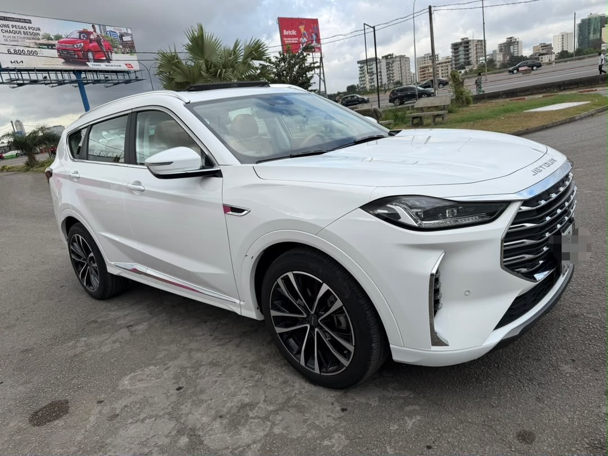

À vendre
Jetour X70 Plus 2026
2026 · Essence · Automatique · Importé
18 800 000 FCFA
Légèrement négociable
Année2026
BoîteAutomatique
ÉnergieEssence
KilométrageÀ confirmer
OrigineImporté
SiègeÉlectrique
ToitPanoramique
CoffreÉlectrique
DémarrageStart/Stop
CamérasRecul · 360°
MultimédiaGrand écran
DocumentsPapiers à jour
ÉquipementFull options
Véhicule importé, essence et boîte automatique, full options selon le vendeur. Grand écran, caméra de recul et caméra 360°, toit panoramique, coffre et siège électriques, démarrage Start/Stop. Papiers à jour. Kilométrage à confirmer auprès du vendeur.
Contactez TVB CI AUTO pour les informations, la position du véhicule et une visite.